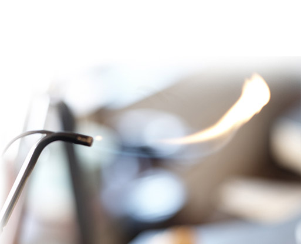

Frouks geeft ook workshops, wekelijks geeft zij in haar ruime atelier les aan maximaal 7 cursisten. Tijdens de cursus leert ze hen verschillende technieken. Te beginnen met basisvaardigheden als optekenen, zagen, vijlen, boren en vervolgens
solderen en stenen zetten.
Naast de wekelijkse cursus is er ook de mogelijkheid om een workshop te doen van een dag, waarin je onder begeleiding je eigen sieraad maakt.
Klik voor een overzicht van de werking van de stenen die frouks veel gebruikt in haar sieraden.